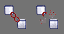

La barre d'outils (Main Toolbar)
Cette barre est très importante et la plus utilisée. Voyons la fonction des boutons utiles:
 Undo, Redo
Undo, Redo
Permet d'annuler ou de recommencer une action
 Lier, Délier
Ces boutons servent à hiérarchiser les différents objets en un arbre
Mode de sélection
On peut sélectionner les objets un par un par clic, en formant une zone de sélection. On peut restreindre la sélection à certains types d'objets. Enfin on peut choisir l'objet dans une liste.
Transformations
Les transformations servent à déplacer des objets en translation ou rotation et à changer leur échelle.
Repères
Ce menu permet de choisir un repère particulier, son origine et son orientation.
Blocage d'axe
On peut contraindre les axes lorsque l'on exécute une transformation. Par exemple, translater un objet sur l'axe X sans changer ses coordonnées en Y et Z. Les axes dépendent sur repère utilisé.
Symétrie
Ouvre une boite de dialogue pour réaliser tous types de symétries axiales ou centrales
Réseaux
Permet de dupliquer des objets en série
Alignement
Permet d'aligner un objet par rapport à un autre objet (le plus utile), une normale, une vue...
Les matériaux
Le premier icône renvoie vers le gestionnaire de matériaux.
Il permet d'affecter des textures aux objets, de les rendre opaques, transparents,
mats, brillants, autoluminescents...
Le second est le navigateur de matériaux, il permet de gérer
les matériaux utilisés par le projet. Attention!! Ce sous
programme pose de gros problème de stabilité chez moi et
fait planter gmax en général quand je l'ouvre.
Menus | Retour Tutoriaux | Retour Interface gmax | Panneaux de commande